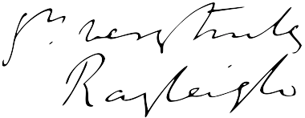

History
Why is the sky blue? This question has probably pervaded the minds of human beings since
the dawn of mankind, but the true scientific explanation has only been understood in more recent history.
The short answer is a phenomenon called Rayleigh Scattering which is named after the man who first described it:
English Physicist Lord John Rayleigh. Before going into too much detail however, we must first explore the work of
someone else...
Preserving broth in optically pure air
In the 1860's English Physicist John Tyndall (1820-1893) worked on disproving the spontaneous generation
of life theory through a process of sterilizing known as Tyndallization. He was trying to show that bacteria in the air
was the source of mold growth, and for his experiments he wanted to compare boiled meat broth in two groups: one
which was exposed to room air and another that was exposed to pure air.[1]
His method for producing pure air was to coat the
inside of a box with glycerin to cause any particles to settle and stick to the sides. In order to check the level of particles
still floating around inside, he would shine a powerful light through a hole cut into the side. Any dust or other
particulates would sparkle, letting him know that the air was still impure. While this happened, he observed that the light
that scattered off of the air particles was mostly blue tinted whereas the light that passed through was mostly red tinted.
He described the light scattering off of particles in such colloidal suspension as Tyndall scattering, and in 1869 applied
this idea to explain how it affected the color of the sky and sunset.[2]
Rayleigh expanded upon these ideas and
in 1871 published "On the light from the sky, its polarization and colour" and "On the scattering of light by small particles"
which provided a mathematical expression to describe the phenomenon.
Rayleigh Scattering

Electromagnetic Wave Propogation: Z-axis
Polarization: X-axis
Scattering: Z-Y axis
When an electromagnetic wave interacts with a small particle, the oscillating electric field creates
an oscillating dipole when the electrons are moved back and forth. The oscillating dipole radiates at the same frequency as
the incident radiation, which causes scattering.[3] The main difference between Tyndall Scattering and Rayleigh Scattering is that the latter accounts
for light scattering particles which are smaller than the wavelength of light. Atmospheric molecules in air such as
Oxygen, Carbon Dioxide, and atoms such as Nitrogen are all smaller than 40nm and behave differently than particles in
colloidal suspension.[4]

The Rayleigh Scattering Formula
To account for this, Rayleigh balanced the exponents on both sides of Tyndall's equation and derived an inverse fourth
power dependence on scattered light to incidence wavelength. He also published other papers on this phenomenon where he
"derived the expression for the incident wavelength, the intensity and degree of polarization of the scattered light as a function of
wavelength, and the refractive angle index of the scattering particles."[5]
Since the scattering intensity of the wavelength is proportional to λ -4, a wavelength
at 400nm (blue light) is scattered a factor of ~7 times as efficient as a wavelength of
650nm (red light). The sky therefore
appears to be blue on Earth because blue light is scattered more efficiently than red light in our atmosphere.
References

A scene from the Anime Aldnoah.Zero where this boy corrects
someone who mistakenly said the sky is blue due to refraction
1.) ^ Tyndall, John; Fragments of Science, Vol 2,
chapters IV, XII (1876), XIII(1878); Pub. P. F. Collier, New York 1905.
2.) ^ Tyndall, John; Essays on the floating-matter of the air,
in relation to putrefaction and infection, page 46; Pub. D. Appleton and Company, New York 1888.
3.) ^
Combustion Energy Frontier Research Center, Princeton University; Rayleigh Scattering; 2011.
4.) ^ "Tyndall Effect." Wikipedia.org.
5.) ^
Masters, Barry R.; Lord Rayleigh: A Scientific Life; Optics and Photonics News; The Optical Society; Volume 20, issue 6;
June 2009.
